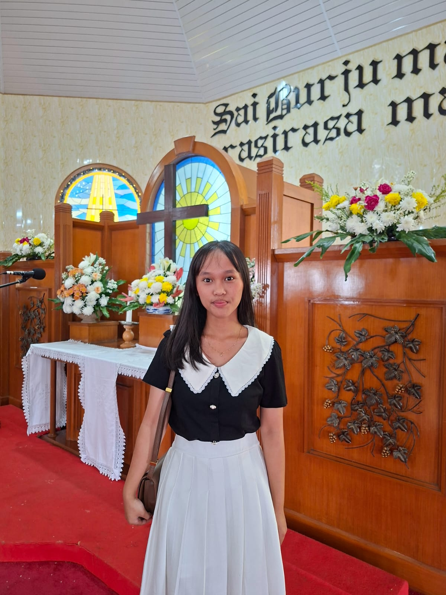

Rouli Claudia Panggabean
roulipanggabean414@email.com
+62 812 6097 1356
Medan, Indonesia
github.com/rouli
linkedin.com/in/rouli
Tentang Saya
Mahasiswa Informatika semester 5 dengan minat pada pengembangan web dan penerapan AI untuk kebutuhan bisnis kecil menengah. Terbiasa membangun antarmuka responsif serta mengintegrasikan layanan chatbot sederhana ke dalam produk digital.
Pengalaman
Jul 2026 — Sekarang
Front-End Developer Intern — Nexora AI
Membangun antarmuka landing page dan dashboard internal menggunakan HTML, Tailwind CSS, dan integrasi API chatbot.
Jan 2025 — Jun 2025
Divisi Acara — Departemen Pusat Dalam Kampus
Mengelola website organisasi dan mendokumentasikan kegiatan kepanitiaan menggunakan sistem berbasis Git.
Proyek
Pendidikan
2024 — 2028
S1 Informatika
Institut Teknologi Del
Keahlian
HTML & CSS
Bootstrap 5
Tailwind CSS
JavaScript
Git & GitHub
Figma
Sertifikat
- Front-End Web Development — Dicoding (2025)
- Belajar Dasar AI — Dicoding (2025)